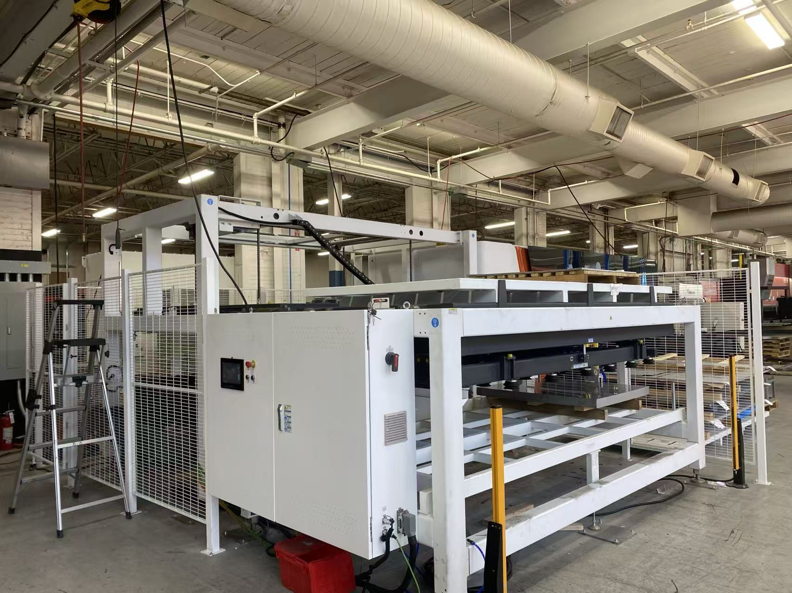
Automated Sheet Laser — Material Handling
Integrated manufacturing equipment and sheet handling systems
Hands-on experience supporting complex automated equipment from installation and commissioning to troubleshooting and reliable operation.
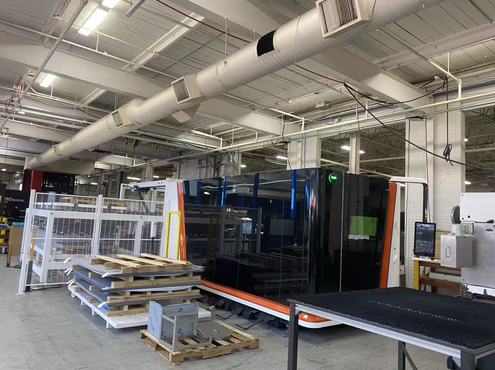
01 / Profile
I'm Yongyi Jiang, a Customer Service Engineer with 3+ years of hands-on experience supporting customers through equipment installation, commissioning, troubleshooting, maintenance, and operator training.
I have installed and commissioned 50+ automated fiber-laser cutting systems. I diagnose mechanical, electrical, pneumatic, PLC/HMI, motion-control, and optical issues, explain technical findings to customers, and coordinate with global R&D to resolve equipment problems.
I hold a master's degree in Mechanical Engineering, with controlled-environment service experience and semiconductor manufacturing knowledge.
02 / Industrial Systems
A selection of automated fiber-laser systems photographed in industrial facilities. Select a photo to see the full image.

Integrated manufacturing equipment and sheet handling systems
Fiber-laser cutting equipment in an operating facility
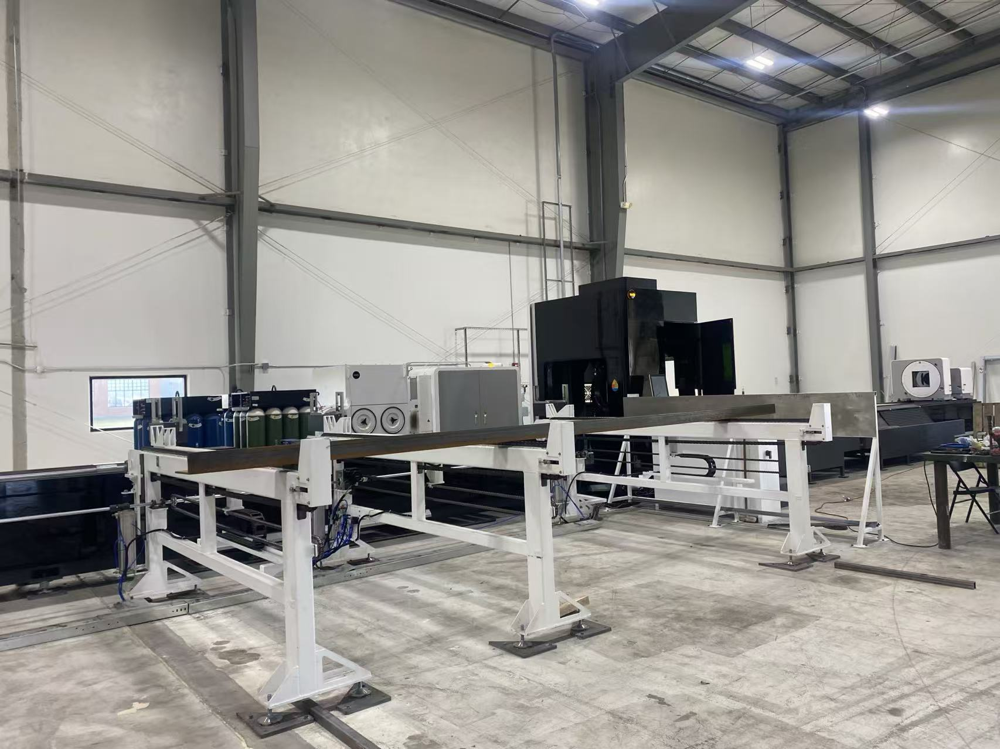
Tube cutting equipment with integrated material handling
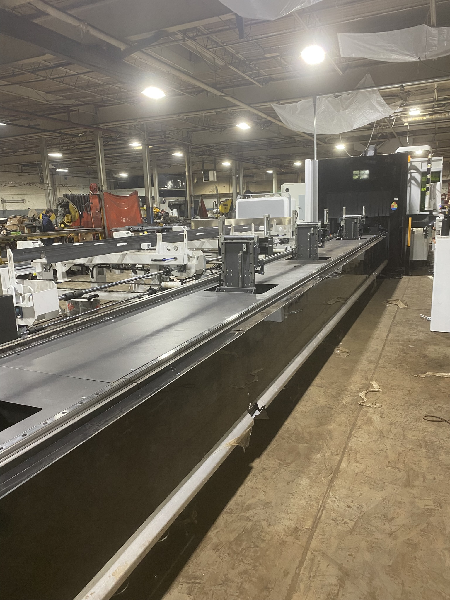
Material transport and machine integration
03 / Hardware & Systems
Electrical infrastructure, industrial utilities and manufactured samples.
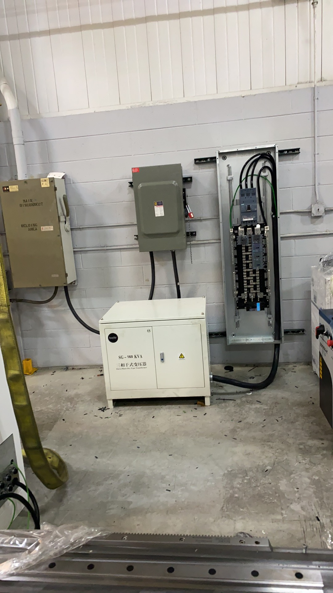
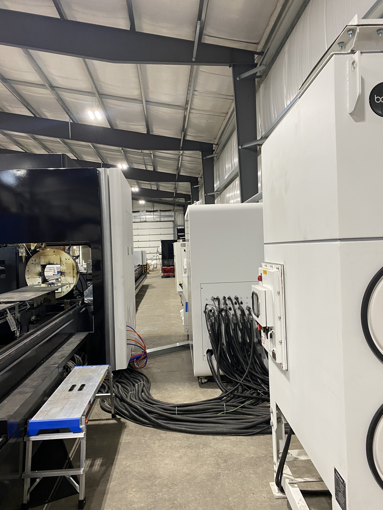
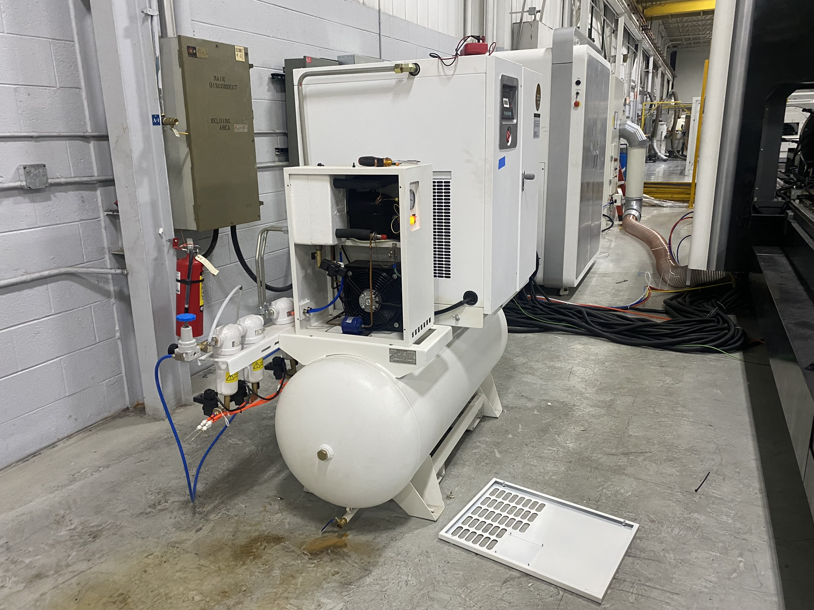
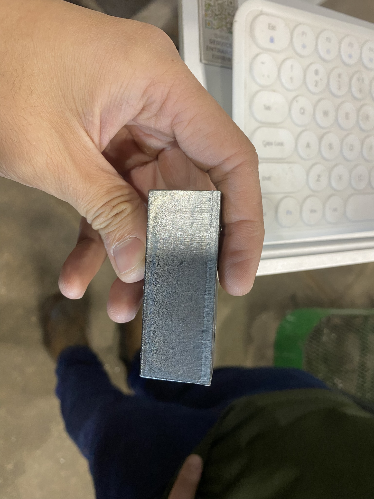
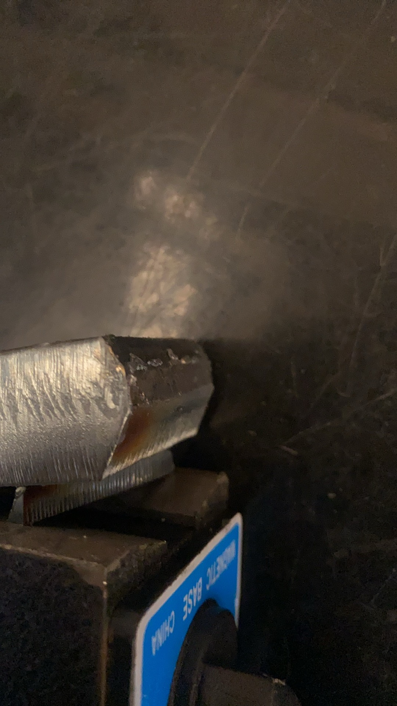
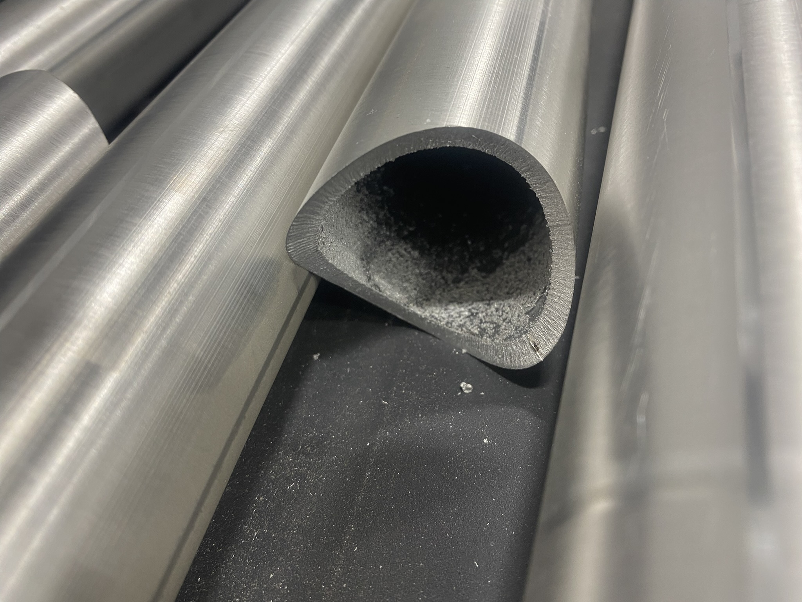
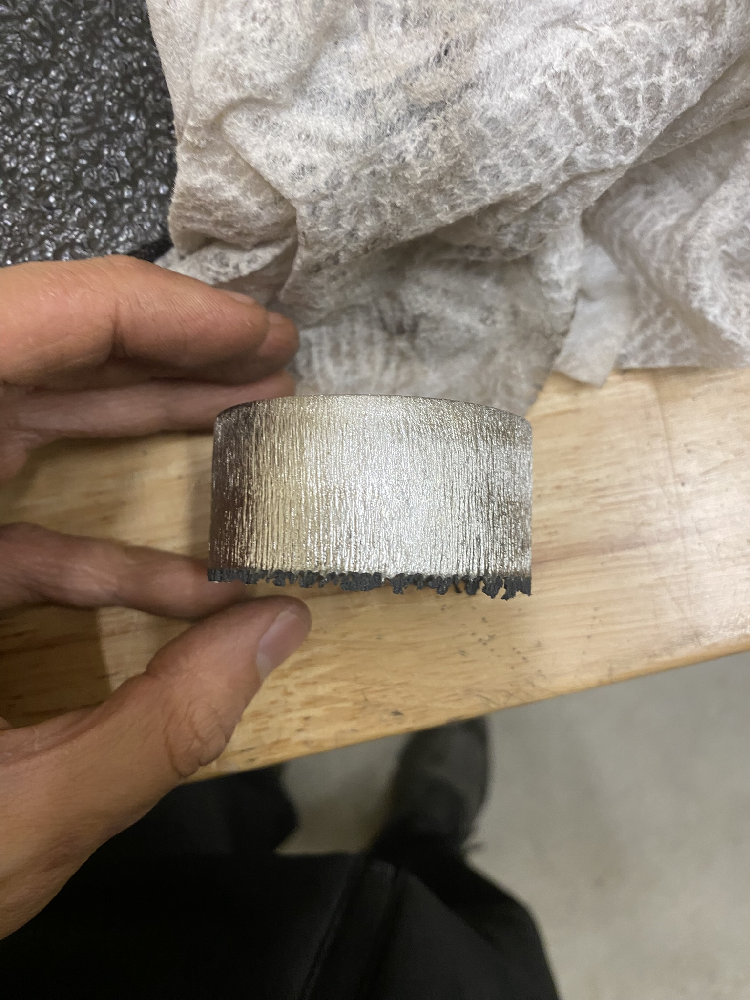
04 / Field Engineering
Hands-on engineering support across the equipment service lifecycle.
01 / INSTALLATION
On-site installation and setup of automated cutting equipment and integrated mechanical, electrical, and pneumatic systems.
02 / COMMISSIONING
Functional testing, bringing equipment into operation, configuring machine settings, and customer operator training.
03 / TROUBLESHOOTING
Diagnosing electrical, mechanical, PLC/HMI, motion-control, and optical issues, and collaborating with global R&D for resolution.
05 / Independent Work
Personal builds that connect mechanical design, electronics, and embedded software.

Working prototype
A custom digital level built around an ESP32-C3, MPU6050 sensor, and circular color display. I designed the enclosure and controller mounts in SOLIDWORKS and developed the firmware for filtered tilt measurement and a two-position zero reference.
View project06 / Let's Connect
Interested in engineering opportunities or a technical conversation? Feel free to reach out.